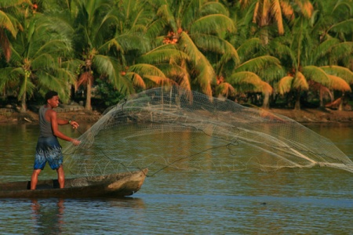
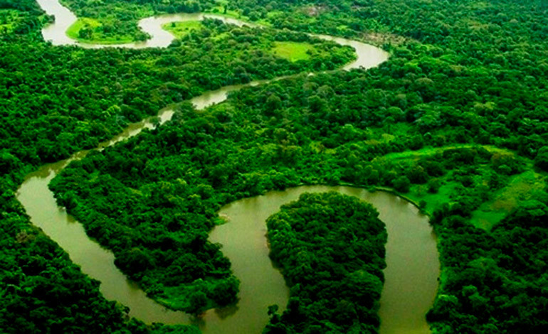

La reserva del rio platano esta localizada en los alrededores de rio platano en la mosquitia la region en la costa caribeña de honduras.

Consta con mas de la mitad de los mamiferos conocidos en honduras alguna especie de mamiferos como lo son:Monos capuchinos, pecries,venados, tapir o danto,perezosos, Oso hormiguero etc.

Posee arboles de mas de 50 metros de alto y 69 sitios arqueologicos los cuales ayudaron a descubrir la ciudad blanca. en 2018 se documentado unas 586 especies de plantas vasculares en las tierras bajas de la reserva.